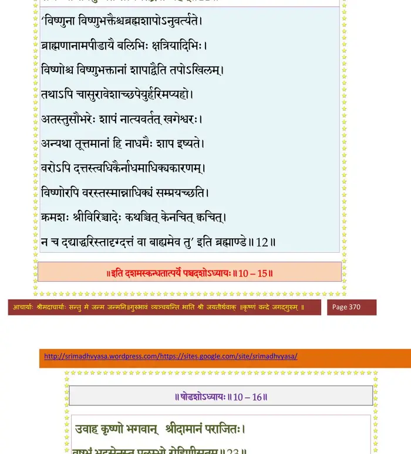

स्कन्ध 10 · अध्याय 15
श्लोक १
राजोवाच–
नागालयं रमणकं कस्मात् तत्याज कालियः ।
कृतं किं वा सुपर्णस्य तेनैकेनासमञ्जसम्।। १ ।।
नागालयं रमणकं कस्मात् तत्याज कालियः ।
कृतं किं वा सुपर्णस्य तेनैकेनासमञ्जसम्।। १ ।।
श्लोक २
श्रीशुक उवाच–
उपहार्यैः सर्पजनैर्मासिमासीह यो बलिः ।
वानस्पत्यो महाबाहो नागानां प्राङ् निरूपितः।। २ ।।
उपहार्यैः सर्पजनैर्मासिमासीह यो बलिः ।
वानस्पत्यो महाबाहो नागानां प्राङ् निरूपितः।। २ ।।
श्लोक ३
स्वं स्वं भागं प्रयच्छन्ति नागाः पर्वणिपर्वणि ।
गोपीथायात्मनः सर्वे सुपर्णाय महात्मने।। ३ ।।
गोपीथायात्मनः सर्वे सुपर्णाय महात्मने।। ३ ।।
श्लोक ४
विषवीर्यमदाविष्टः काद्रवेयस्तु कालियः ।
कदर्थीकृत्य गरुडं स्वयं तां बुभुजे बलिम्।। ४ ।।
कदर्थीकृत्य गरुडं स्वयं तां बुभुजे बलिम्।। ४ ।।
श्लोक ५
तच्छ्रुत्वा कुपितो राजन् भगवान् भगवत्प्रियः ।
विजिघांसुर्महावीर्यं कालियं समुपाद्रवत्।। ५ ।।
विजिघांसुर्महावीर्यं कालियं समुपाद्रवत्।। ५ ।।
श्लोक ६
तमापतन्तं तरसा विषायुधः प्रत्यभ्ययादुद्धृतनैकमस्तकः ।
दद्भिः सुपर्णं व्यदशद् ददायुधः करालजिह्वोच्छ्वसितोग्रलोचनः।। ६ ।।
दद्भिः सुपर्णं व्यदशद् ददायुधः करालजिह्वोच्छ्वसितोग्रलोचनः।। ६ ।।
श्लोक ७
तं तार्क्ष्यपुत्रः स निरस्य मन्युमान् प्रचण्डवेगो मधुसूदनासनः ।
पक्षेण सव्येन हिरण्यरोचिषा जघान कद्रूसुतमुग्रविक्रमः।। ७ ।।
पक्षेण सव्येन हिरण्यरोचिषा जघान कद्रूसुतमुग्रविक्रमः।। ७ ।।
श्लोक ८
सुपर्णपक्षाभिहतः कालीयोऽतीवविह्वलः ।
हृदं विवेश कालिन्द्यास्तदगम्यं दुरासदम्।। ८ ।।
हृदं विवेश कालिन्द्यास्तदगम्यं दुरासदम्।। ८ ।।
श्लोक ९
तत्रैकदा जलचरं गरुडो भक्ष्यमीप्सितम् ।
निवारितः सौभरिणा प्रसह्य क्षुधितोऽहरत्।। ९ ।।
निवारितः सौभरिणा प्रसह्य क्षुधितोऽहरत्।। ९ ।।
श्लोक १०
मीनान् सुदुःखितान् दृष्ट्वा दीनान् मीनपतौ हते ।
कृपया सौभरिः प्राह तत्र तत्क्षेममाचरन्।। १० ।।
कृपया सौभरिः प्राह तत्र तत्क्षेममाचरन्।। १० ।।
श्लोक ११
अत्र प्रविश्य गरुडो यदि मत्स्यान् स खादति ।
सद्यः प्राणैर्वियुज्येत सत्यमेतद् ब्रवीम्यहम्।। ११ ।।
सद्यः प्राणैर्वियुज्येत सत्यमेतद् ब्रवीम्यहम्।। ११ ।।
भागवततात्पर्यनिर्णय

श्लोक १२
तत् कालियः परं वेद नान्यः कश्चित् स लेलिहा ।
अवात्सीद् गरुडाद् भीतः कृष्णेन च विवासितः।। १२ ।।
अवात्सीद् गरुडाद् भीतः कृष्णेन च विवासितः।। १२ ।।
श्लोक १३
कृष्णं हृदाद् विनिष्क्रान्तं दिव्यस्रग्गन्धमण्डितम् ।
महामणिगणाकीर्णं जाम्बूनदपरिष्कृतम्।। १३ ।।
महामणिगणाकीर्णं जाम्बूनदपरिष्कृतम्।। १३ ।।
श्लोक १४
उपलभ्योत्थिताः सर्वे लब्धप्राणा इव प्रजाः ।
प्रमोदनिभृतात्मानो गोपाः प्रीत्याऽभिरेमिरे।। १४ ।।
प्रमोदनिभृतात्मानो गोपाः प्रीत्याऽभिरेमिरे।। १४ ।।
श्लोक १५
यशोदा रोहिणी नन्दो गोपा गोप्यश्च कौरव ।
कृष्णं समेत्य लब्धेहा आसंल्लब्धमनोरथाः।। १५ ।।
कृष्णं समेत्य लब्धेहा आसंल्लब्धमनोरथाः।। १५ ।।
श्लोक १६
रामश्चाच्युतमालिङ्ग्य जहासास्यानुभाववित् ।
नरा गावो वृषा वत्सा लेभिरे परमामुदम्।। १६ ।।
नरा गावो वृषा वत्सा लेभिरे परमामुदम्।। १६ ।।
श्लोक १७
नन्दं विप्राः समागम्य गुरवः सकलत्रकाः ।
ऊचुस्ते कालियग्रस्तो दिष्ट्या मुक्तस्तवात्मजः।। १७ ।।
ऊचुस्ते कालियग्रस्तो दिष्ट्या मुक्तस्तवात्मजः।। १७ ।।
श्लोक १८
यशोदा च महाभागा नष्टलब्धप्रजा सती ।
परिष्वज्याङ्कमारोप्य मुमोचाश्रुकणान् बहून्।। १८ ।।
परिष्वज्याङ्कमारोप्य मुमोचाश्रुकणान् बहून्।। १८ ।।
श्लोक १९
ततश्चास्तंगते भानौ कृष्णो वासमकल्पयत् ।
सरामः सह गोपालैर्मात्रा पित्रा सगोधनैः।। १९ ।।
सरामः सह गोपालैर्मात्रा पित्रा सगोधनैः।। १९ ।।
श्लोक २०
तां रात्रिं तत्र राजेन्द्र क्षुत्तृड्भ्यां श्रमकर्शिताः ।
ऊषुर्व्रजौकसो गावः कालिन्द्या उपकूलतः।। २० ।।
ऊषुर्व्रजौकसो गावः कालिन्द्या उपकूलतः।। २० ।।
श्लोक २१
एतस्मिन्नेव काले तु व्रजे कौरवसत्तम ।
घोरः शुचिबलोद्भूतो दावाग्निः सर्वतो वृतः।। २१ ।।
घोरः शुचिबलोद्भूतो दावाग्निः सर्वतो वृतः।। २१ ।।
श्लोक २२
सुप्तान् निशीथ आवृत्य प्रदग्धुमुपचक्रमे।। २२ ।।
श्लोक २३
तत उत्थाय सम्भ्रान्ता दह्यमाना व्रजौकसः ।
कृष्णं ययुस्ते शरणं मायामनुजमीश्वरम्।। २३ ।।
कृष्णं ययुस्ते शरणं मायामनुजमीश्वरम्।। २३ ।।
श्लोक २४
कृष्ण कृष्ण महाभाग हे रामामितविक्रम ।
एष तीव्रतमो वह्निस्तावकान् ग्रसते हि नः ।
सुदुस्तरान्नः स्वान् पाहि कालाग्नेः सुहृदः प्रभो।। २४ ।।
एष तीव्रतमो वह्निस्तावकान् ग्रसते हि नः ।
सुदुस्तरान्नः स्वान् पाहि कालाग्नेः सुहृदः प्रभो।। २४ ।।
श्लोक २५
न शक्नुमस्त्वच्चरणं सन्त्यक्तुमकुतोभयम्।। २५ ।।
श्लोक २६
इत्थं स्वजनवैक्लव्यं निरीक्ष्य जगदीश्वरः ।
तमग्निमपिबत् तीव्रमनन्तोऽनन्तशक्तिधृक्।। २६ ।।
तमग्निमपिबत् तीव्रमनन्तोऽनन्तशक्तिधृक्।। २६ ।।
श्लोक २७
अथ कृष्णः परिवृतो ज्ञातिभिर्मुदितात्मभिः ।
अनुगीयमानो न्यविशद् व्रजं गोकुलमण्डितम्।। २७ ।।
अनुगीयमानो न्यविशद् व्रजं गोकुलमण्डितम्।। २७ ।।
।। इति श्रीमद्भागवते दशमस्कन्धे पञ्चदशोऽध्यायः ।।